실제 게임(같은 저장 · STAGE 33 전투) 위에 실제 키트(UiKit 판 · 글꼴 · 아이콘, AtelierKit.a2 버튼)로 지은 Godot 시험 화면을 찍었습니다. 라이브 화면은 바꾸지 않았습니다 (scenes/test/a2_shop/). 상품 값은 무한항로 설계안 3차 · 보스특성 설계안 가안, 전투력 · 스테이지 · 재화 · 천장은 실제 게임 값입니다.
상점
A · 진열장 — 갈래 레일 + 추천 큰 판 + 상품 칸 격자
한눈에 많이 고르고 비교하기 쉽다 ↔ 칸마다 효과가 두 줄로 압축되고, 자세한 근거는 한 번 더 눌러야 본다.
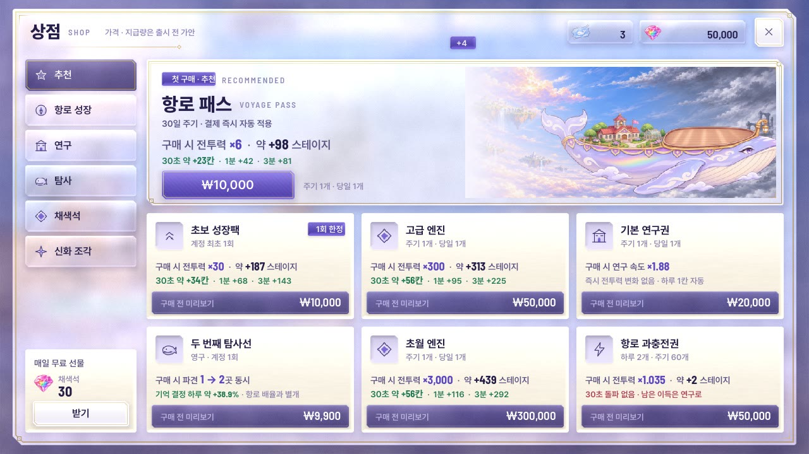
진열장 · 1280×720
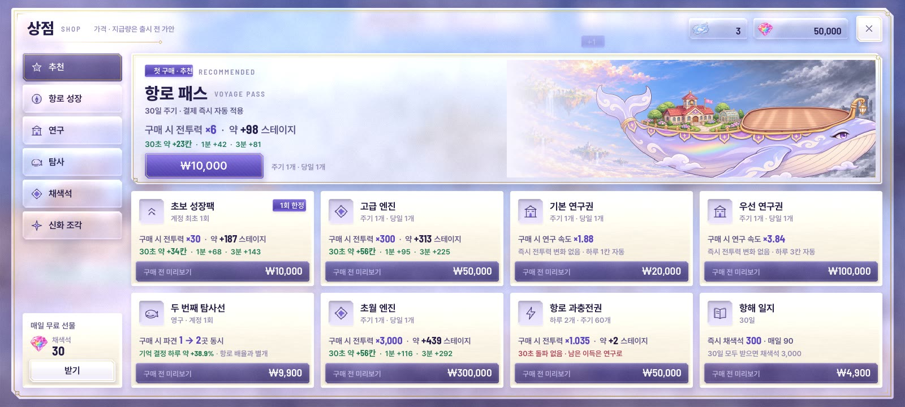
진열장 · 1600×720
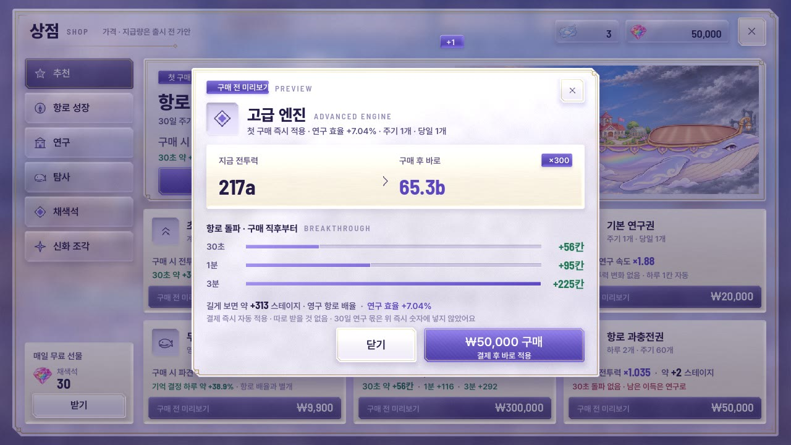
구매 전 미리보기 (고급 엔진) · 1280×720
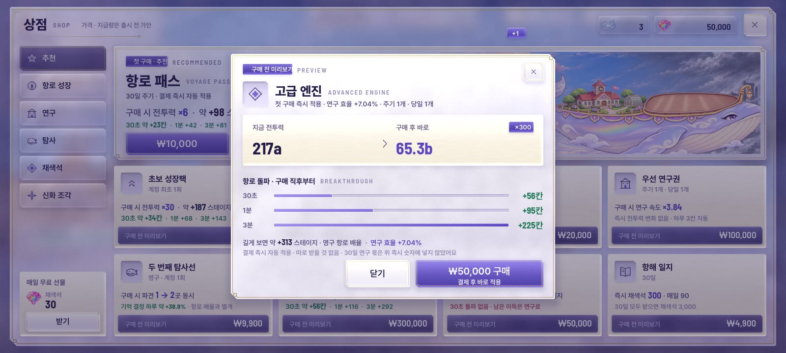
구매 전 미리보기 (고급 엔진) · 1600×720
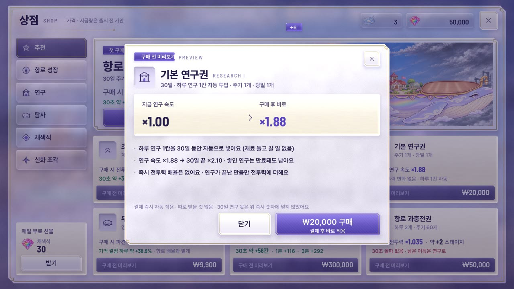
구매 전 미리보기 (기본 연구권 · 즉시 배율 없음) · 1280×720
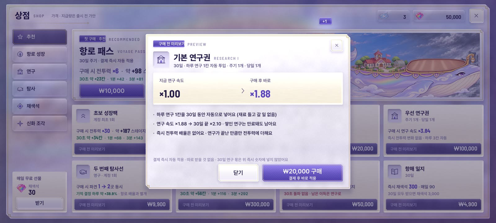
구매 전 미리보기 (기본 연구권 · 즉시 배율 없음) · 1600×720
영상: 칸 누름 → 구매 전 미리보기(지금 → 구매 후 오름, 돌파 막대) → 구매 → 결과
B · 상담대 — 상품 줄 목록 + 큰 미리보기 상시
고르는 순간 전 · 후 전투력과 항로 줄이 크게 보여 설득력이 가장 세다 ↔ 한 번에 보이는 상품이 7줄로 적고, 카테고리 간 이동이 탭 한 번 더.
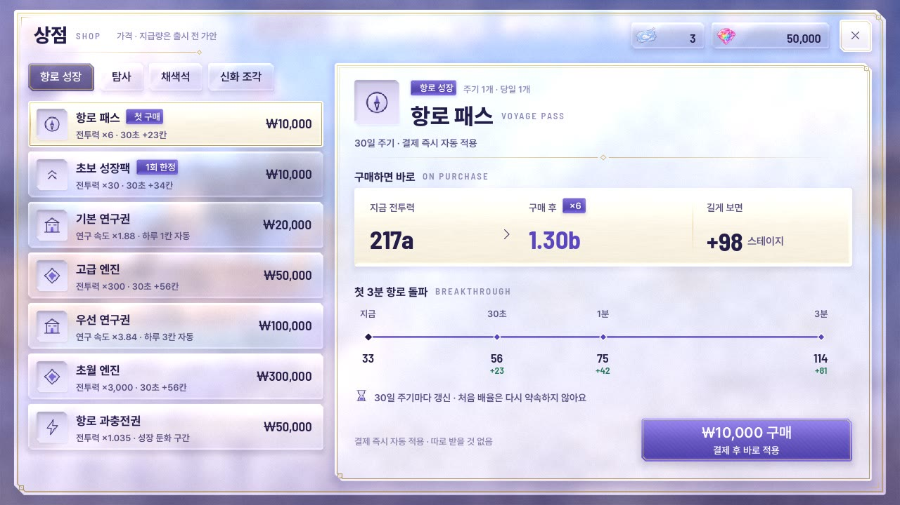
항로 패스 선택 · 1280×720
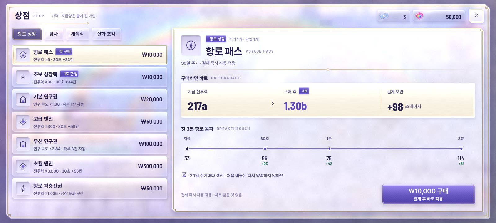
항로 패스 선택 · 1600×720
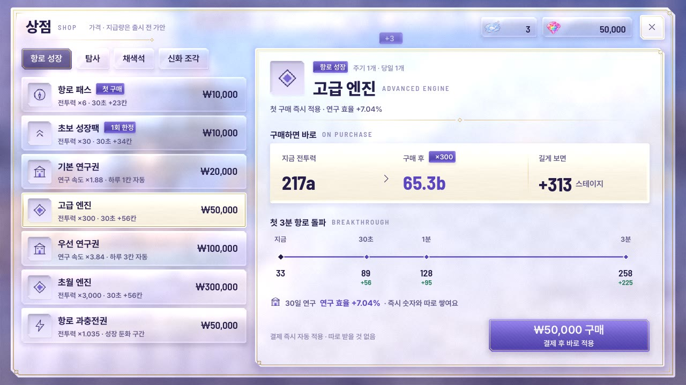
고급 엔진 선택 · 1280×720
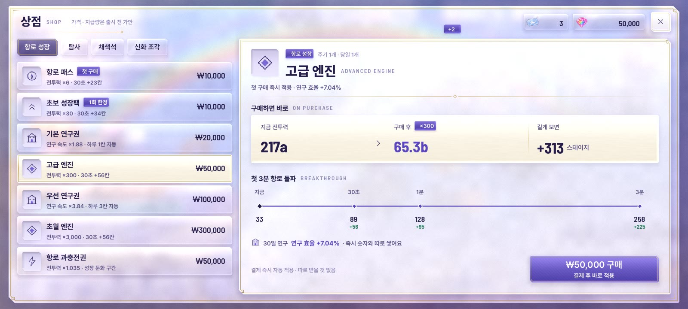
고급 엔진 선택 · 1600×720
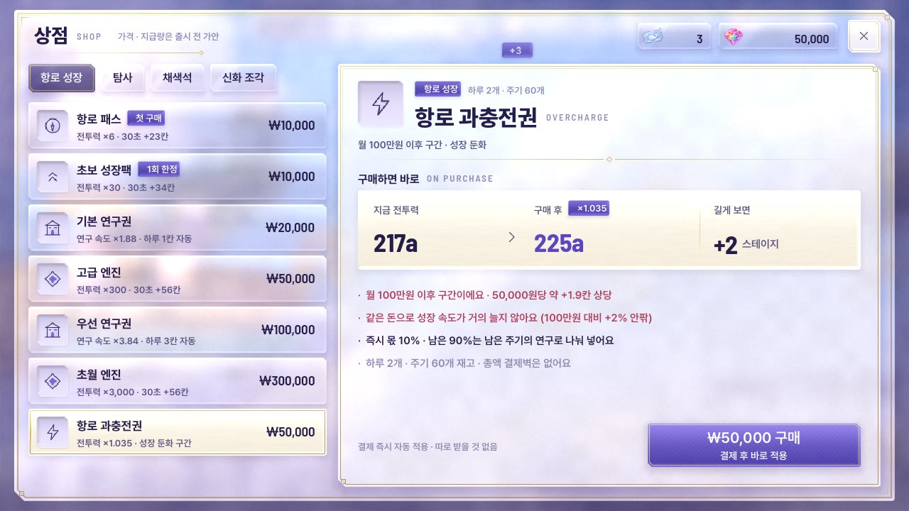
과충전권 — 소프트캡 고지 · 1280×720
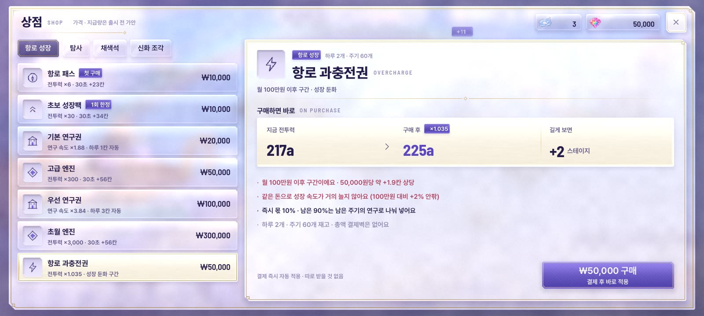
과충전권 — 소프트캡 고지 · 1600×720
영상: 줄 고르기(값 오름 · 항로 줄 달림) → 초보 성장팩 → 구매 → 결과
공통 · 구매 직후 결과
상점 창이 물러나고 실제 전투 위에서 전투력 old → new가 오른 뒤, 연기 유리 띠가 열리며 항로가 달려 「돌파 +N 스테이지」. (영상은 30초 돌파를 3.6초로 줄여 보임)
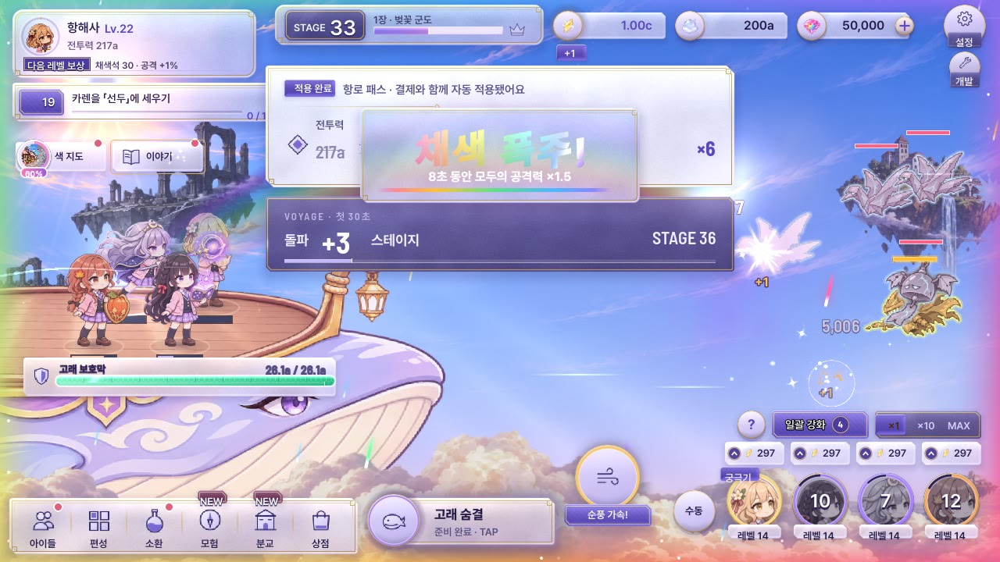
전투력 오름 (항로 패스 ×6) · 1280×720
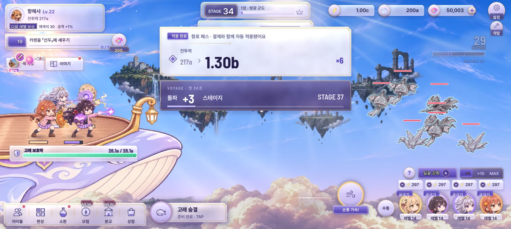
전투력 오름 (항로 패스 ×6) · 1600×720
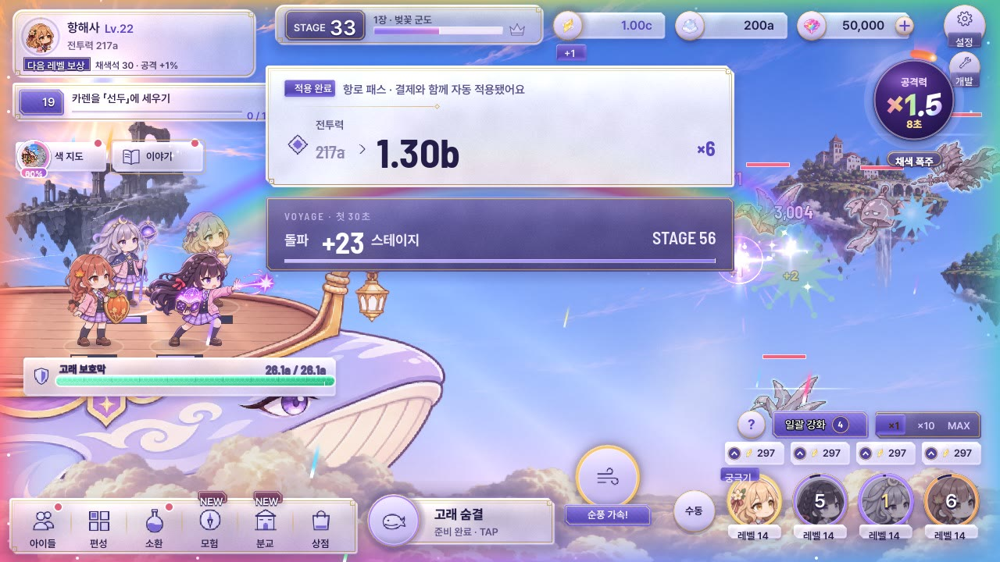
돌파 +23 스테이지 · 1280×720
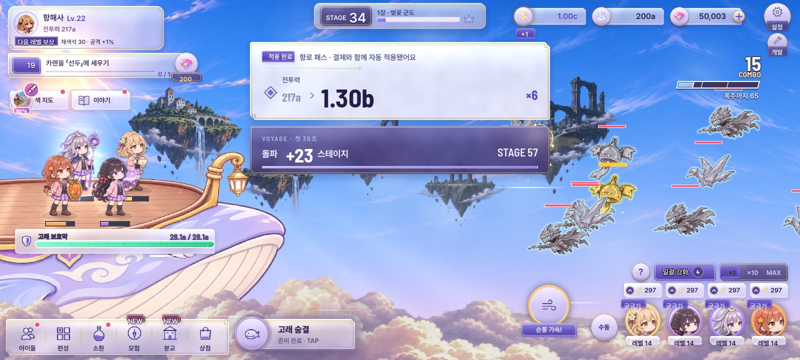
돌파 +23 스테이지 · 1600×720
픽업 판매 (이그니 · SS 불꽃 단일 딜러)
A · 포스터 — 그림이 창 전체, 오른쪽 서리 유리 한 단
첫 화면에서 아이에게 반하게 만드는 힘이 가장 크다 ↔ 근거 · 미리보기 · 확률이 한 단에 모여 미리보기가 작고, 두 번째 보스 특성은 빠졌다.
포스터 · 1280×720포스터 · 1600×720
영상: 열림(그림 먼저) · 실제 궁극기 미리보기 재생
B · 브리핑 — 세로 그림 · 큰 미리보기(궁극기/스킬) · 보스 특성 대응표
왜 지금 사야 하는지(대응 보스 둘 · 필요 전력 ×1.32→×1.00)와 연출을 크게 보여 납득시키기 좋다 ↔ 그림이 좁아져 첫눈의 매력은 A보다 약하다.
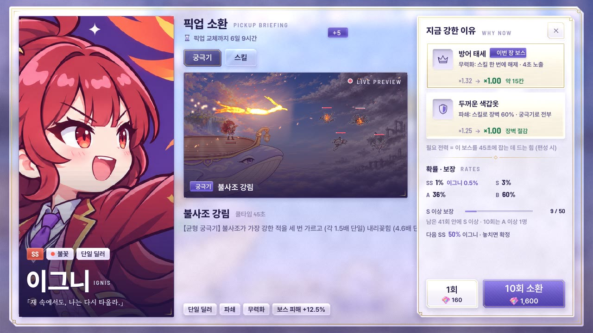
브리핑 · 궁극기 · 1280×720
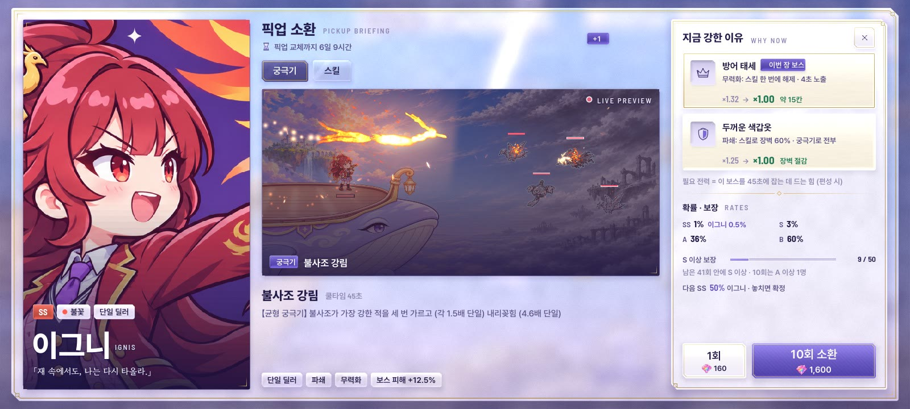
브리핑 · 궁극기 · 1600×720
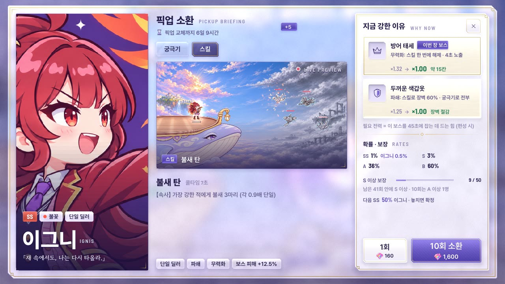
브리핑 · 스킬 탭 · 1280×720
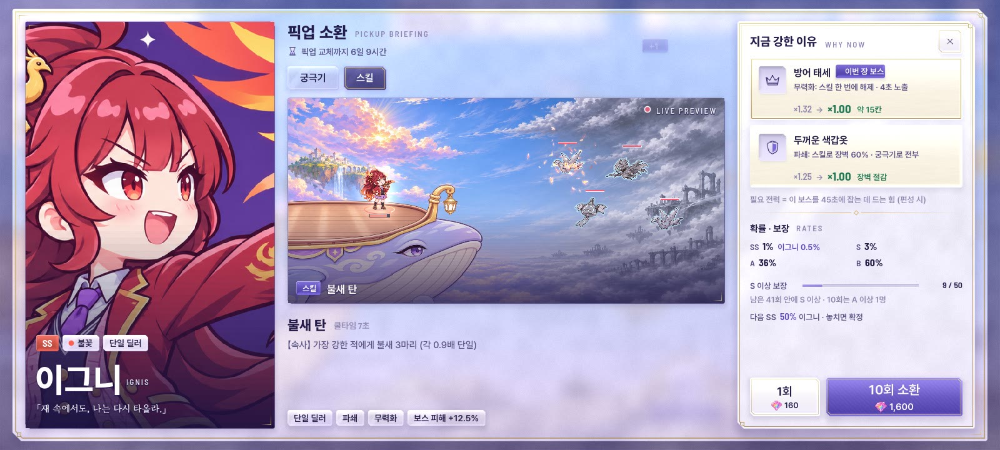
브리핑 · 스킬 탭 · 1600×720
영상: 열림 · 궁극기 재생 → 스킬 탭 → 궁극기 탭
지킨 규칙 · 남은 것
칠 버튼(라벤더 에나멜)은 화면마다 하나: 추천 구매 / 미리보기 구매 / 10회 소환. 나머지는 흰 자기 · 연기 유리.
모든 상품이 사기 전에 효과를 보임: 「구매 시 전투력 ×N · 약 +M 스테이지 / 30초 약 +K칸」, 연구권은 「연구 속도 ×R · 즉시 전투력 변화 없음」, 탐사선은 「파견 1 → 2곳」 — 즉시 몫과 30일 연구 몫을 섞지 않음.
금은 머리카락 선 · 꺾쇠 · 마름모만, 모서리 4px + 잘린 귀, 금선 빛은 열림 · 누름 · 고름 때만 한 바퀴. 튀는 움직임 없음.
궁극기 미리보기는 실제 스킬 상세 무대(SkillPreview)가 진짜 연출을 되풀이 — 영상 파일 슬롯이 아니라 게임 안에서 돈다.
남은 것: 맨 위 가운데 HUD 「+N」 칩이 덮개 위로 비침(HUD 쪽 층 순서, 실제 적용 때 메뉴 층에서 정리). 실제 결제 · 지급 · 30초 실전 돌파는 연결하지 않은 시늉. 필요 전력 배율은 설계 예산 값(미실측).